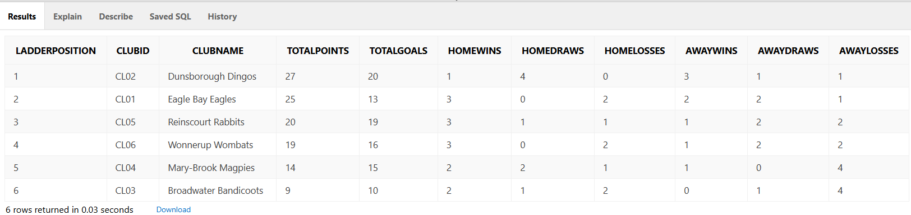
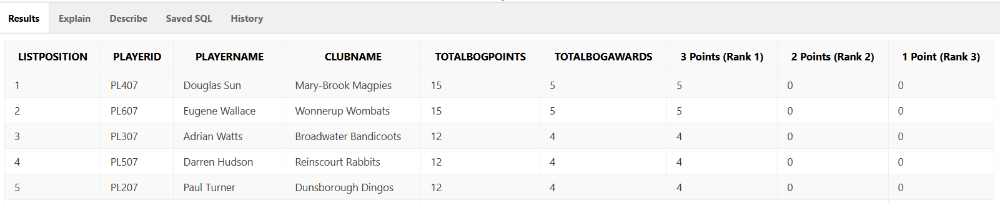

Oracle SQL · Database design
Soccer competition database
How do you store a whole soccer season so that any question about it can be answered with one query? I designed and built a database for a six-club competition: the clubs, grounds, players, referees, games, goals, cards and best-on-ground awards. Then I wrote the queries an organiser would ask for, such as the season ladder and the most valuable player.
- Problem
- A local soccer competition needs one database that records every game, goal, card and award, and can produce the ladder and player awards at the end of the season.
- What I did
- Sole author: business rules, entity relationship diagram, schema, data dictionary, SQL to create and load the tables, and 13 queries with written explanations. Database unit (ISYS5000), Curtin University, 2026.
- Tools
- Oracle SQL · entity relationship diagram · data dictionary · normalisation
- Result
- 18 business rules became a 16-table schema. Loaded with a sample season, it answers 13 organiser questions, from the six-club ladder to every one of the season's 93 goals.
turned into 16 linked tables
each one answers an organiser's question
6 clubs, 10 weeks, 93 goals

What I found
-
Writing the rules first made the tables obvious. I wrote 18 business rules in pairs, one for each direction, such as "A Club has one or more Players" and "A Player takes part in one and only one Club". Each pair became one relationship line in the diagram, so nothing in the schema is there without a rule behind it.
-
Four linking tables do most of the work. A game has two clubs, several referees and many players, and a player appears in many games. ClubGame, GameReferee, GamePlayer and BogPlayer each record one of those pairings, which keeps every fact stored once.
-
One query produces the full ladder. It adds up competition points and goals for each club and counts home and away wins, draws and losses. Dunsborough Dingos finished first on 27 points and Eagle Bay Eagles second on 25, so those two clubs play the post-season charity game.
-
The same tables answer player questions. 23 players scored the season's 93 goals, and Joel Sutton and Ross Edwards led with 9 each. Douglas Sun topped the best-on-ground list with 15 points from 5 awards.
-
Ties need a rule. Two players finished level on 15 best-on-ground points with the same number of awards. My query breaks the tie by name, which is enough to list them but not a fair way to pick a winner, so a real competition would need its own tie-break rule in the data.
The design
The 16 tables fall into four groups. Linking tables record who took part in what, and lookup tables hold short lists that rarely change.
5 tables
People and places
ClubCoachPlayerRefereeGround
Each club has one coach and trains at one ground. Each player belongs to one club.
2 tables
The calendar
WeekGame
Every game belongs to one week and is played at one ground.
3 tables
Who took part
ClubGameGamePlayerGameReferee
Linking tables. Each row pairs one club, player or referee with one game.
6 tables
What happened
ScoredGoalAwardedCardBogPlayerResultStartPositionBestOnGround
Goals, cards and best-on-ground awards, with three lookup lists for results, positions and award ranks.
The data dictionary
Every column is described before any SQL is written: what it means, its data type, whether it is required, and the name of each key and constraint. The CREATE TABLE statements were written from this document. This is the entry for the Club table.
| Column | Description | Format | Rule | Constraint name |
|---|---|---|---|---|
clubID | Unique identification of a club | CHAR (4) | Primary key | Club_PK |
clubName | Club's name | VARCHAR2 (50) | Required | Club_Name_NN |
establDate | Date the club was established | DATE | Optional | |
majorSponsor | Name of the club's major sponsor | VARCHAR2 (50) | Optional | |
numOfMembers | Total members registered with the club | NUMBER (3,0) | Optional | |
coachID | The club's coach | CHAR (4) | Required, foreign key to Coach | Club_Coach_FK |
Asking the database questions
The 13 queries are grouped the way an organiser would ask them: season outcomes, goals and scorers, the most valuable player, and a few one-off questions such as the largest crowd and the highest-scoring game.
This one finds the two clubs for the charity game. It joins each club to its game records and results, adds up points and goals, and keeps the top two. Goals scored is the tie-breaker when points are level.


Other answers from the season
- Best away record: Dunsborough Dingos, with 3 wins, 1 draw and 1 loss away from home.
- Largest crowd: 450 people, for Dunsborough Dingos against Broadwater Bandicoots on 29 June 2024.
- Highest-scoring game: 6 goals, Reinscourt Rabbits against Dunsborough Dingos at West Busselton Oval.
- Busiest ground for goals: Eagle Bay Centre, where 19 of the 93 goals were scored.
Key takeaways
- Rules before tables. Writing each relationship as a plain sentence in both directions caught mistakes before any SQL was written.
- Store each fact once. Linking tables look like extra work, but they are why one goal or one card is never recorded twice.
- Decide the tie-breaker in the query. The ladder sorts by points and then by goals, and the order of those two columns changes who plays the final.
- Explain every query. For each one I wrote which tables it reads, why it joins them and what the grouping does, so someone else can check it.
About the data
Where the data comes from: The clubs, players and results are sample data for a made-up South West Soccer Competition, created for the Database unit (ISYS5000) at Curtin University. No real people or clubs are described.